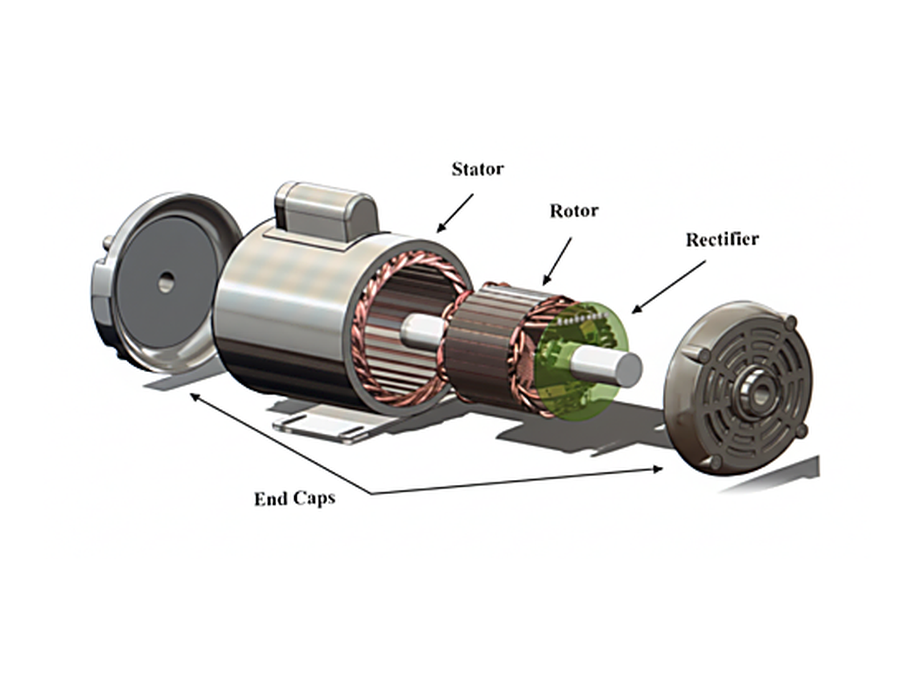
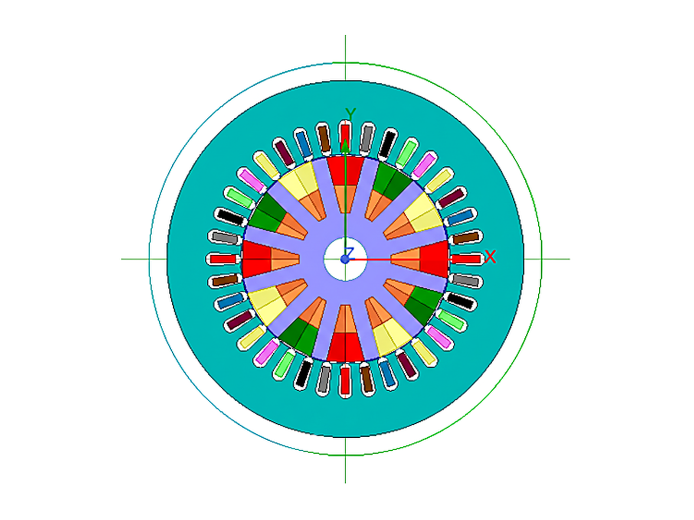
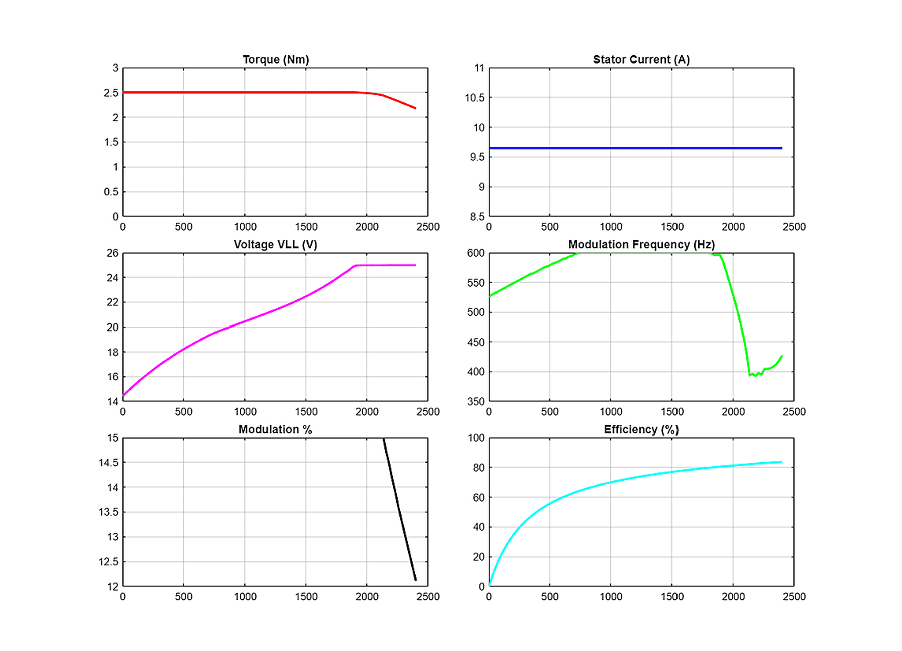
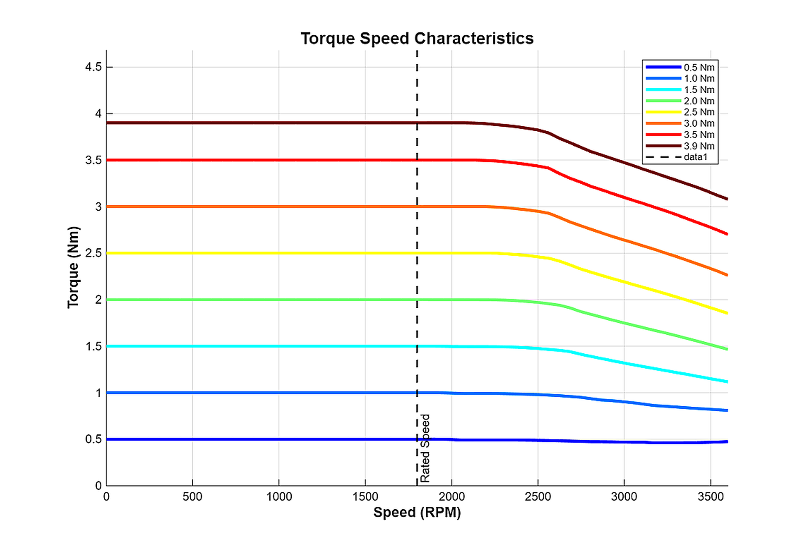
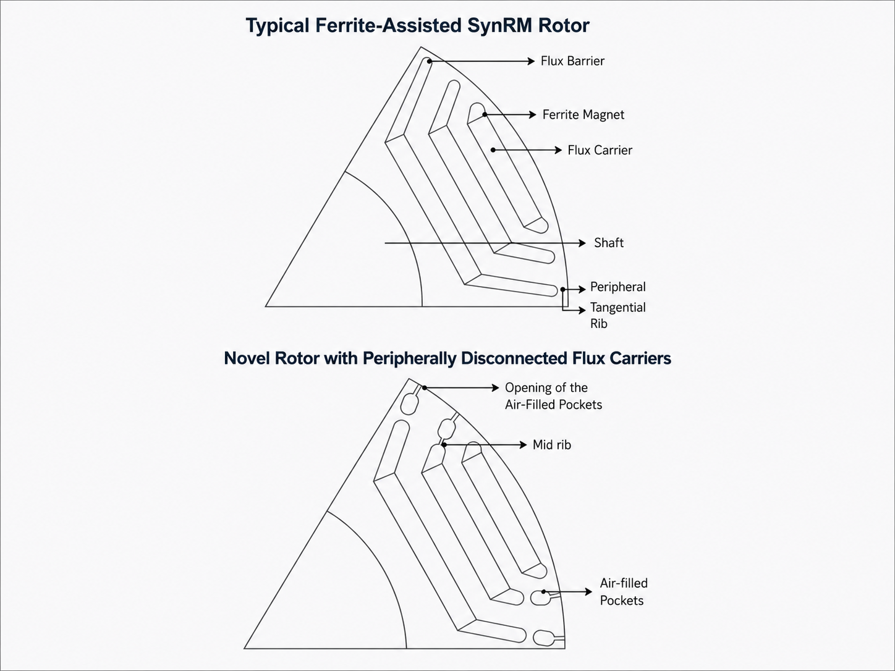
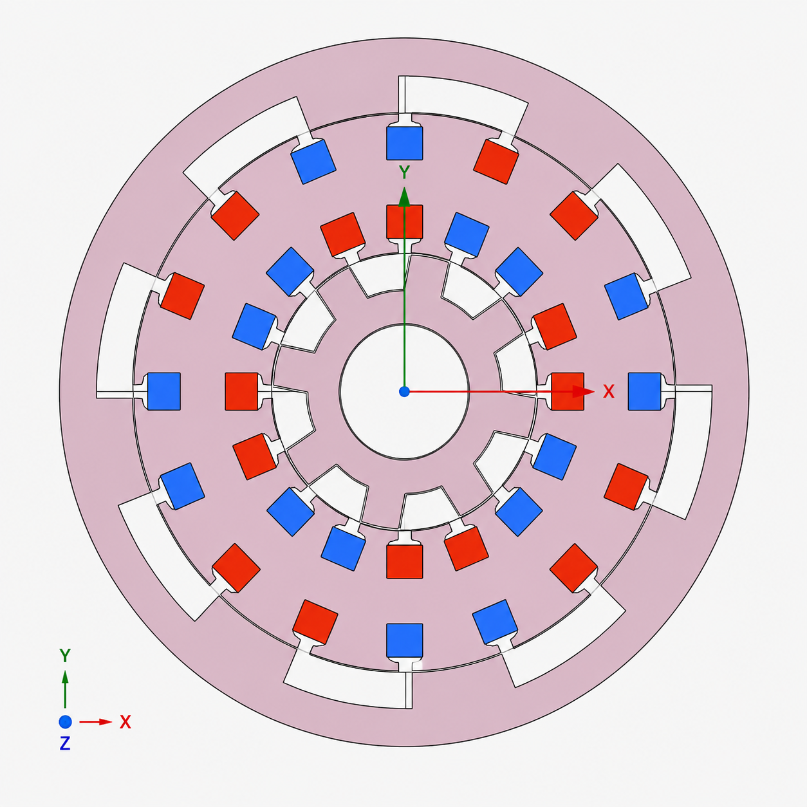
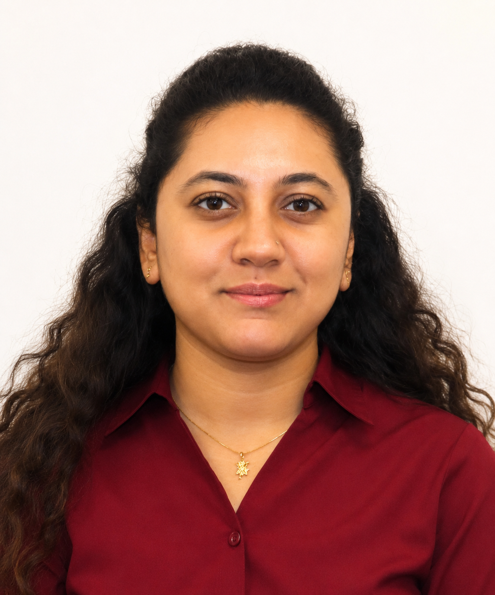

Experience
Simulation and Modeling of an Asynchronously Excited Brushless Wound-Field Synchronous Machine
Contributed to the electromagnetic design and simulation-based modeling of an asynchronously excited brushless wound-field synchronous machine in Ansys Maxwell. Worked on pole-phase modulation, intentionally injected harmonics for brushless excitation, rotor design, external circuit development, and suitable modulation combinations for synchronous operation.


Torque-Speed Characterization of an Asynchronously Excited Brushless Wound-Field Synchronous Machine
Developed interpolation and post-processing code for an asynchronously excited brushless wound-field synchronous machine with three control parameters: modulation frequency, modulation-to-total current ratio, and total RMS stator current. Compared interpolated results with simulation data to select the best parameter combinations based on efficiency, power factor, and torque ripple, while generating torque-speed plots for visualization and analysis.


Multi-Objective Electric Machine Optimization & Simulation Automation
Developed an automated simulation workflow that generated motor geometry from input parameters, assigned materials and components, configured simulation settings, and set up motion bands for analysis. The workflow first evaluated the best phase advance angle for the motor model, then performed transient analysis to calculate torque, currents, voltages, losses, and other performance outputs for post-processing. Rotor parameter optimization was performed using Pareto-front analysis for torque maximization and torque ripple minimization. A Genetic Algorithm approach was also implemented using population-based search, random initialization, crowding distance, and Pareto ranking to improve global optimization and reduce the risk of convergence to local optima.

Novel Ferrite-Assisted SynRM Rotor Design for Improved Efficiency and Reduced Rotor Iron Loss
Developed a novel ferrite-assisted synchronous reluctance motor rotor design to reduce rotor iron loss at higher operating speeds, where rotor heating becomes more difficult to manage than stator heating. The design introduced slot-shaped air flux barriers near the tangential rib to shift sensitive flux regions away from the air gap and reduce exposure to continuous flux fluctuations. This helped lower rotor losses, reduce motor weight, and improve overall efficiency. A patent application for this design is currently under review, and I am one of the listed inventors.

Simulation and Analysis of Dual-Rotor Synchronous Motor
Worked on the simulation and analysis of a dual-rotor synchronous motor to study different stator-rotor combinations and design parameters. Focused on understanding how machine topology, geometry variations, and electromagnetic design choices influence motor performance.

About Me
I am an Electrical Engineering graduate student at Texas A&M University with a strong interest in electric machine design, power electronics, and simulation-driven engineering. I enjoy working on practical problems where electromagnetic design, analysis, testing, and optimization come together to improve real system performance.
View Resume